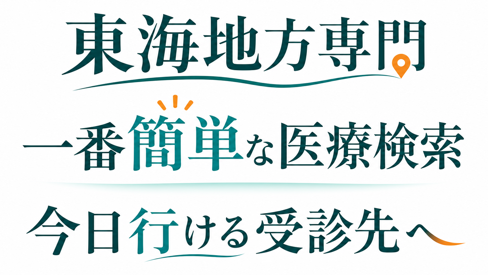

東海で、今日行ける受診先をすぐ見つける

東海地方専門。一番簡単な医療検索。今日行ける受診先へ。
地域、症状、診療科、現在地から、今の自分に合う候補をすぐ確認。診療時間、電話、地図まで迷わず進めます。
症状や希望を、そのまま入力
近くの候補
近さとマッチ度順で表示
ことばや現在地から、近くて条件に合う候補を上から表示します。
並び順
近い順 + マッチ度順
施設詳細
千種内科クリニック
基本情報、診療時間、確認日、修正依頼を1画面に整理します。